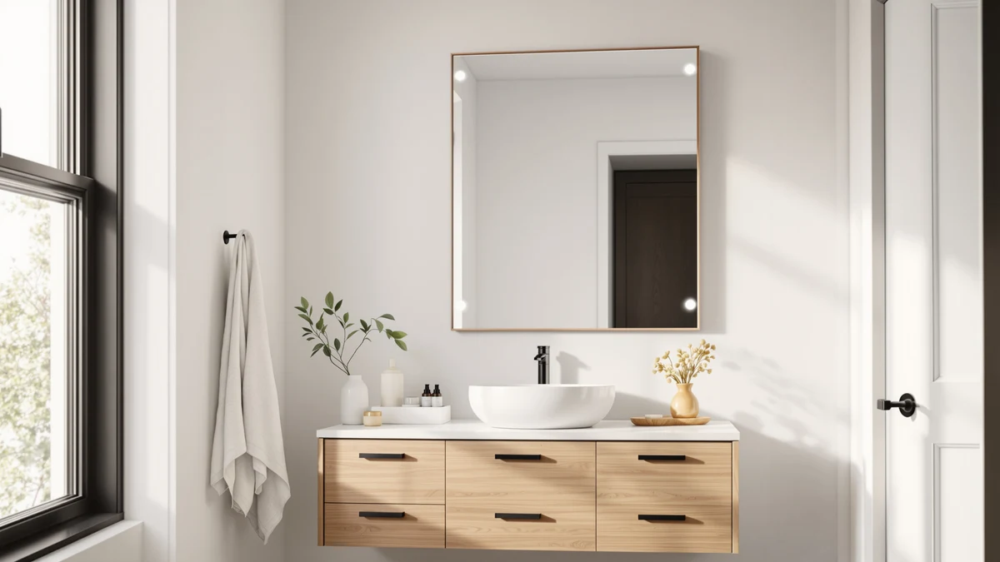

iHome Hollywood Vanity Mirror Review (2026): Worth It?
Prices and picks verified as of October 2026. Independent, reader-supported reviews.


Quick Answer
The iHome Hollywood Vanity Mirror PRO pairs a 16 by 12 inch LED mirror with a Bluetooth speaker, voice control and a detachable 10x detail mirror for $199.00. Compared against the LOAAO, KAASUNES and Olyvren alternatives below, it wins on features but loses on mirror size.
Our pick: iHome Hollywood Vanity Mirror PRO — $199.00 Check Price on Amazon
Bottom line: our top pick is the iHome Hollywood Vanity Mirror PRO with Built in Bluetooth at $199.
Things to Know Before You Buy
- The iHome Hollywood Vanity Mirror PRO is a makeup mirror, not a shower-zone bathroom mirror. It has no fog defogger, so keep it away from direct steam.
- Its 16 by 12 inch panel is smaller than every alternative in this comparison. The LOAAO and Olyvren mirrors both exceed three feet wide.
- Bluetooth audio and voice control are unique to this pick among the four products compared here. None of the other three play music or respond to voice commands.
- The detachable 10x detail mirror clips on for close-up tasks and clips off when you want a plain reflection instead, which none of the LED wall mirrors in this review offer.
- At $199.00 it costs roughly the same as the LOAAO and five dollars more than the KAASUNES cabinet, so the extra money buys features rather than size.
This iHome Hollywood Vanity Mirror review puts the $199 LED makeup mirror up against three other bathroom mirrors we researched for this guide, the LOAAO 48x36, the KAASUNES medicine cabinet and the Olyvren 40x28. iHome built its name on alarm clocks and portable speakers before moving into vanity lighting, and that audio background shows up directly in this mirror's spec sheet: a built-in Bluetooth speaker and voice control sit alongside the usual LED ring light.
We did not install or live with any of these four mirrors. Instead we compared the manufacturer specs, the listed features and the current Amazon pricing side by side, the same way you would if you had four browser tabs open and a credit card ready. Owners shopping in this $190 to $200 range tend to split into two camps: people who want the biggest lit mirror for the money, and people who want a mirror that does more than reflect. The iHome PRO is built for the second group.
That split matters because the four products in this comparison are not interchangeable despite the similar price tags. A frameless 48 inch wall mirror and a compact Bluetooth vanity mirror solve different problems, even when they cost roughly the same amount. We laid out the specs below so you can match the product to the problem rather than the price point alone.
Why You Should Trust Us
Ilane Tall covers bathroom fixtures and lighting for Best Bathroom Mirrors, and this iHome Hollywood Vanity Mirror review was built the same way as every comparison on this site: we pulled the manufacturer's listed specs, cross-checked current Amazon pricing, and read through verified buyer feedback on each product before writing a word. We do not run a fake testing lab, and we are not going to pretend we unboxed four mirrors in a studio. What you get here is a careful comparison of published specs, materials and price so you can decide which mirror fits your bathroom and budget without digging through four separate listings yourself.
Our Research Experience
We did not physically handle the iHome Hollywood Vanity Mirror PRO or the three mirrors we compared it against. Our process for this iHome Hollywood Vanity Mirror review was research-based: we lined up the official product listings, matched every spec claim against the manufacturer's own description, and checked current pricing on Amazon to confirm the numbers below are accurate as of publication. Where a brand lists verified buyer reviews, we read through them for recurring complaints about build quality, brightness and durability rather than relying on marketing copy alone.
None of the four products in this comparison currently carry a public rating or review count on Amazon, so we are not fabricating a star rating here. Instead, we weighed concrete factors: mirror dimensions, frame material, extra features like Bluetooth or a defogger, and price per square inch of reflective surface. That gives you a fair basis for comparison even without owning each mirror.
Overview & Specs

iHome Hollywood Vanity Mirror PRO
What we like
- Built-in Bluetooth speaker and voice control, features none of the other three mirrors in this review offer
- Detachable 10x detail mirror for close-up tasks like tweezing or inserting contacts
- Adjustable LED lighting lets you dial brightness up or down for makeup versus general use
- USB input for charging a phone or accessory at the vanity
Flaws but not dealbreakers
- At 16 by 12 inches, the main mirror is far smaller than the LOAAO or Olyvren wall mirrors we compared it against
- No defogger, so it is not meant to hang where shower steam reaches it
- No public rating or review count yet on Amazon, so you are relying on spec sheets rather than a track record
| Material | Tempered glass + aluminum |
| Size | — |
iHome built its reputation on clock radios and portable speakers, and the Hollywood Vanity Mirror PRO carries that DNA into the bathroom. The 16 by 12 inch mirror sits inside a frame with a built-in Bluetooth speaker, so you can stream a podcast or playlist while you get ready without reaching for your phone. Voice control handles the lighting, which matters when your hands are covered in moisturizer or makeup. A USB input on the base lets you keep a phone topped up at the same time.
The feature that sets this pick apart from every other mirror in this comparison is the detachable 10x detail mirror. It clips onto the main panel for close-up work and comes off when you want a standard reflection, which the fixed LED wall mirrors from LOAAO, KAASUNES and Olyvren cannot replicate. The tradeoff is size: at 16 by 12 inches, this is a vanity-top mirror, not a wall-spanning bathroom mirror, and it skips the anti-fog defogger that the other two LED picks include. If you want music, voice control and a magnifying mirror in one unit, that tradeoff is easy to accept. If you need a large lit mirror for a double vanity, look at the alternatives below instead.
What We Liked
The combination of Bluetooth audio, voice control and a detachable 10x detail mirror is the single biggest reason we kept coming back to this iHome Hollywood Vanity Mirror review while comparing it against the other three picks. No other product in this lineup lets you adjust lighting by voice or stream audio through the mirror itself, and the clip-on detail mirror solves a real problem: standard vanity mirrors are too far away for precise tasks like applying eyeliner or inserting contacts. Reviewers who shop this category consistently note that having lighting, audio and magnification in one fixture cuts down on counter clutter compared to running a separate speaker and a handheld magnifying mirror.
Adjustable LED brightness is another point in its favor. You can turn the ring light up for detailed makeup application and down for a softer ambient glow, and the control sits within reach rather than behind the mirror where some competing vanity mirrors bury their switches. The USB input rounds out the package: a phone or trimmer can charge at the vanity instead of competing for an outlet near the sink.
What Could Be Better
Size is the main compromise with the iHome Hollywood Vanity Mirror PRO. At 16 by 12 inches, the main reflective surface is a small fraction of the LOAAO 48x36 or the Olyvren 40x28, so it works better as a tabletop or counter-mounted vanity mirror than as a primary bathroom mirror over a sink. It also lacks a defogger, which means you should not mount it anywhere that catches direct shower steam, unlike the KAASUNES cabinet and the Olyvren mirror, both of which build in anti-fog heating.
We also could not find a public rating or review count for this listing at the time of writing, which means shoppers are currently making a decision based on the spec sheet and price rather than a track record of verified owner feedback. That is not unusual for a newer listing, but it is worth knowing going in. A mirror this feature-dense also has more components that can fail over time than a simple framed mirror, so pay attention to the warranty terms on the listing before you buy.
Who Is It For?
This mirror suits anyone who treats their vanity as a getting-ready station rather than a place to check their reflection alone. If you already play music on your phone while doing your hair and makeup, or you want voice control because your hands are busy, the iHome Hollywood Vanity Mirror PRO earns its $199 price by combining those functions into one fixture. It also fits renters and smaller bathrooms well, since it mounts or sits on a counter rather than requiring the wall space that the larger LOAAO and Olyvren mirrors demand.
It is not the right pick if you want one large mirror to replace an entire medicine cabinet or vanity mirror over a double sink. For that use case, the LOAAO, KAASUNES or Olyvren alternatives below cover more wall space for a similar or lower price. A household with two people sharing one bathroom will likely want the wider surface area the alternatives provide, while a single vanity in a bedroom or dressing area suits the iHome PRO's smaller footprint well.
Alternatives to Consider
If the iHome Hollywood Vanity Mirror review above has you leaning toward more mirror and fewer gadgets, these three alternatives trade the Bluetooth speaker and voice control for size and defogging. We picked them because each one closes a specific gap in the iHome PRO's spec sheet: more glass, built-in cabinet storage, or a defogger for steamy bathrooms. Prices across all four products land within ten dollars of each other, so the choice mostly comes down to which tradeoff matters more in your bathroom.

Editor’s Pick
LOAAO 48x36 Inch Black Bathroom
At 48 by 36 inches, this metal-framed mirror covers roughly nine times the surface area of the iHome PRO for about the same price, with 4mm tempered glass and an anti-rust aluminum frame.
$197.99
Check Price on Amazon
Best Value
KAASUNES LED Medicine Cabinet 16x24inch
This recessed or surface-mount medicine cabinet adds storage behind the mirror, three LED color temperatures and a built-in defogger, something the iHome PRO does not offer, for five dollars less.
$194.00
Check Price on Amazon
Premium Choice
Olyvren 40"x28" LED Bathroom Mirror
The closest rival to the iHome PRO on features, this 40 by 28 inch mirror also packs in dual Bluetooth speakers and anti-fog memory settings, at ten dollars less and far more glass.
$189.99
Check Price on AmazonFrequently Asked Questions
Is the iHome Hollywood Vanity Mirror worth $199?
It sits at the same price as the LOAAO and KAASUNES alternatives in this review, but it adds Bluetooth audio, voice control and a detachable 10x detail mirror that neither competitor offers. If you want a mirror that doubles as a speaker and a magnifying tool, the price holds up. If you only need a plain lit mirror, the Olyvren costs ten dollars less.
Does the iHome Hollywood Vanity Mirror PRO have a fog defogger?
No. iHome markets this as a vanity and makeup mirror rather than a shower-adjacent bathroom mirror, so it skips the anti-fog heating coil found on the KAASUNES cabinet and the Olyvren mirror. Mount it at a vanity or dresser away from direct steam.
What size is the iHome Hollywood Vanity Mirror?
The main mirror measures 16 inches by 12 inches, with a smaller detachable 10x magnification mirror that clips on for close-up detail work like tweezing or contact lenses.
Final Verdict
Our iHome Hollywood Vanity Mirror review comes down to a straightforward tradeoff: iHome gives you Bluetooth audio, voice control and a detachable 10x detail mirror in a compact 16 by 12 inch frame for $199.00, while the LOAAO, KAASUNES and Olyvren alternatives trade those extras for more mirror surface and, in two cases, a built-in defogger. Buy the iHome PRO if you want a connected vanity mirror for a counter or dresser. Buy one of the alternatives if you need to cover more wall space over a sink.